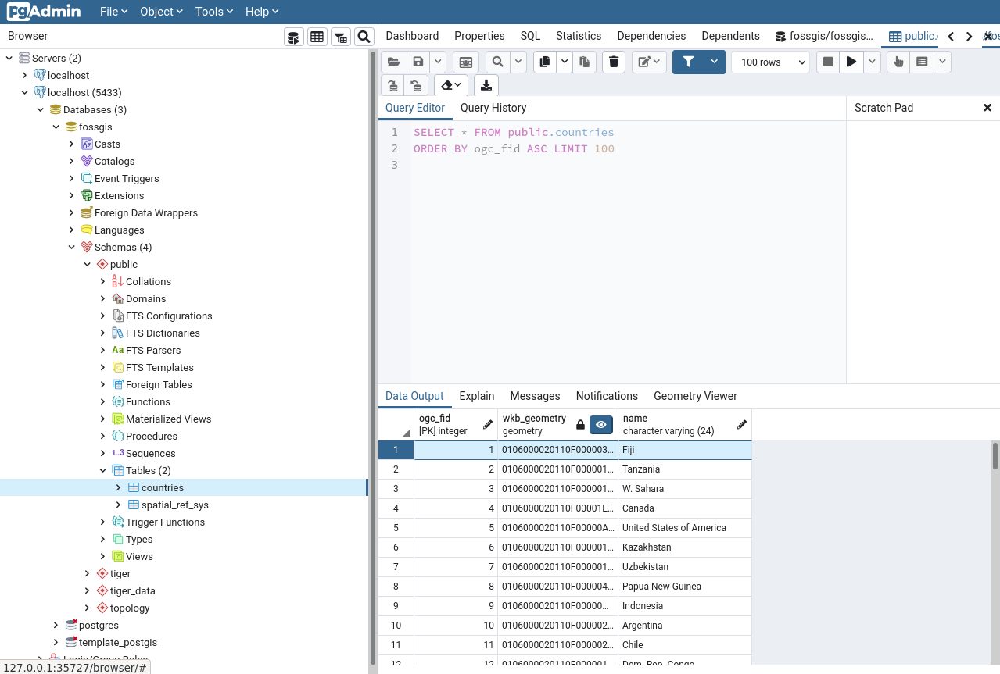

Einrichten einer PostGIS-Datenbank
In diesem Abschnitt richten wir eine PostGIS-Datenbank über Docker Compose ein. Diese Datenbank bildet die Grundlage für unsere Geodateninfrastruktur.
PostGIS-Service hinzufügen
Fügen Sie in der docker-compose.yml eine neue service Konfiguration hinzu.
- Name:
fossgis-postgis - Image:
postgis/postgis:16-3.5-alpine
Folgende Punkte sollten berücksichtigt werden:
- Der interne PostgreSQL-Port 5432 soll auf den Host-Port 5433 weitergeleitet werden, damit wir in der Lage sind Daten zu importieren.
- Das Datenverzeichnis der Datenbank (
/var/lib/postgresql/data) sollte auf das Hostsystem gemountet werden. - Ein Datenbank-Benutzer mit den Zugangsdaten
fossgis:fossgismuss angelegt werden. Dies kann über das Setzen der folgenden Umgebungsvariablen erreicht werden:
POSTGRES_USER: fossgis
POSTGRES_PASSWORD: fossgis
✏️ Tipp: Falls Sie unsicher sind, wie Sie das docker-compose.yml-File strukturieren sollen, werfen Sie einen Blick in die Docker Compose Dokumentation.
Service starten
Starten Sie den PostGIS-Dienst mit folgendem Befehl:
docker compose up
Geodaten importieren
Um die Datenbank mit Geodaten zu füllen, importieren wir die weltweiten Landesgrenzen (countries.sql aus der entpackten materials.zip).
🖥️ Variante 1 – Nutzung von pgAdmin:
- Öffnen Sie pgAdmin
- Verbinden Sie sich mit der Datenbank
fossgis - Importieren Sie die Datei
countries.sql
📟 Variante 2 – Terminal-Befehl: Alternativ können Sie das folgende Kommando nutzen:
psql -U fossgis -h localhost -p 5433 -d fossgis -f countries.sql
Prüfung der Daten
Nach dem Import sollten die Landesgrenzen in der PostGIS-Datenbank sichtbar sein. Ein Beispiel in pgAdmin:

🎯 Geschafft!
Ihre PostGIS-Datenbank läuft nun in Docker und enthält die ersten Geodaten. Im nächsten Schritt erweitern wir unsere Geodateninfrastruktur um den GeoServer.
➡️ Weiter zu GeoServer 🚀